Find anything.
Press Ctrl + K and type. Apps, open windows, settings, wallpapers. Enter, and you're there.
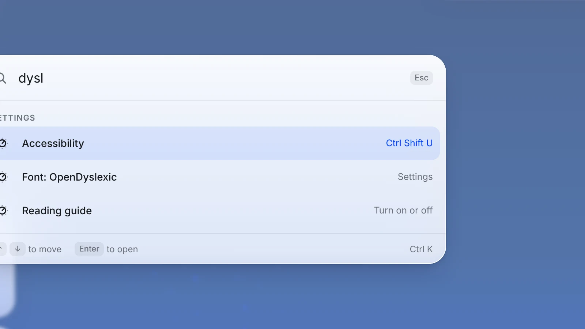
A calm, full-screen home for the apps you already have. Your real apps in a dock. One panel for everything else. And your phone as the remote.
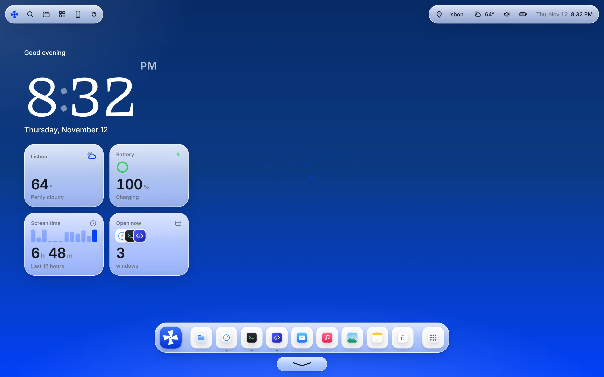
Badges. Pop-ups. A taskbar full of things you didn't open. Windmill blows them away.
Press Ctrl and the Windows key from anywhere. What's open, what you used last, how your PC is doing, your screen time today, and Lock, Restart or Shut down.
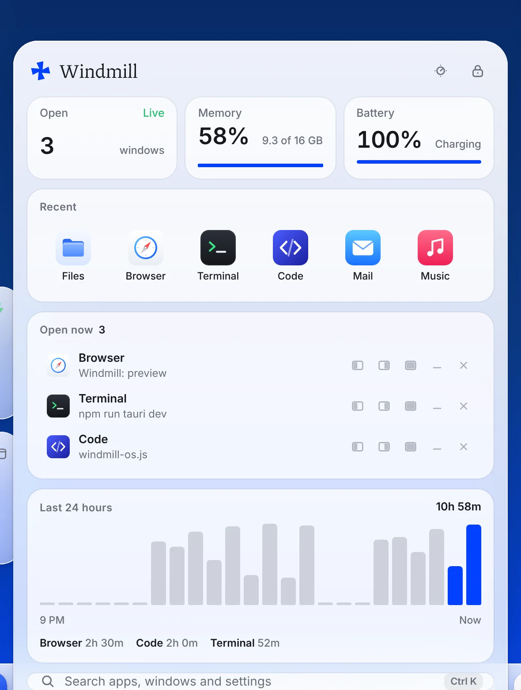
Rest your pointer on an open app in the dock. Snap it left or right, fill the screen, or put it next to another window.
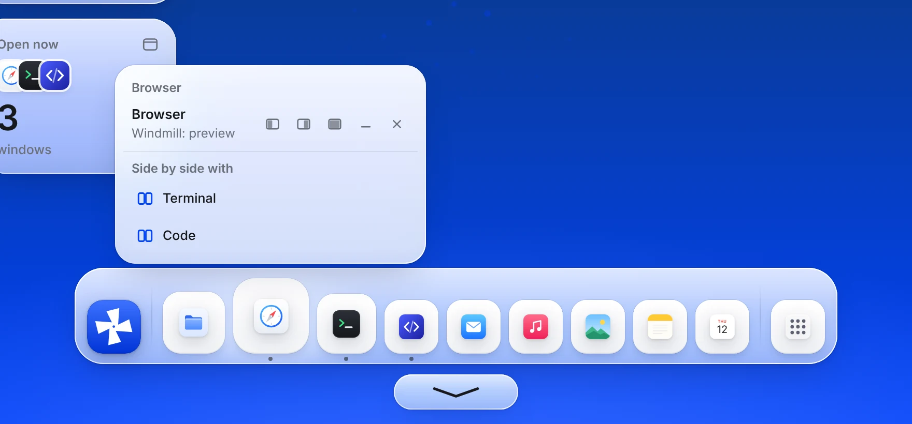
Press Ctrl + K and type. Apps, open windows, settings, wallpapers. Enter, and you're there.

Your PC's actual volume and brightness, Wi-Fi, Do Not Disturb and dark mode, one click from the bar.
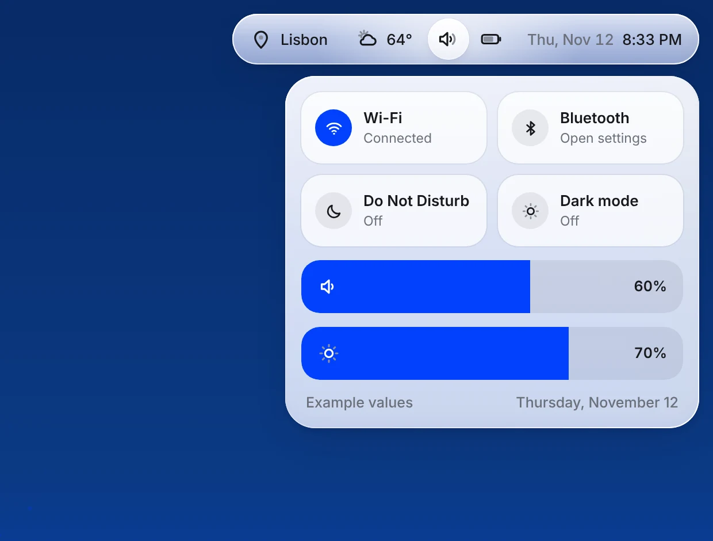
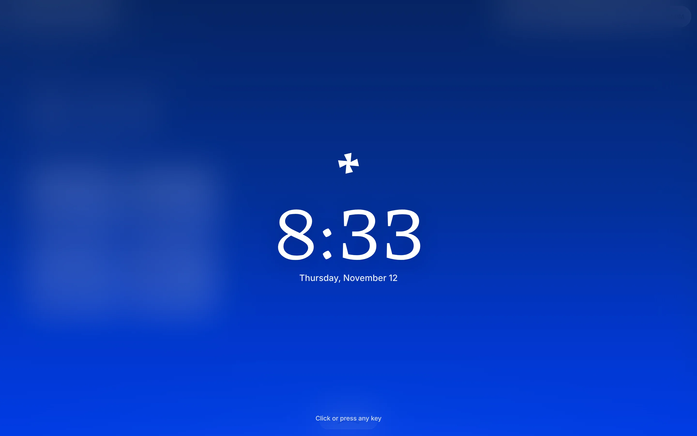
Lock with a four-digit PIN, or let Windmill lock itself when you're gone.
Pair your phone with a six-digit code, and your PC's screen is right there. Tap to click, hold to right-click, drag, scroll and type.
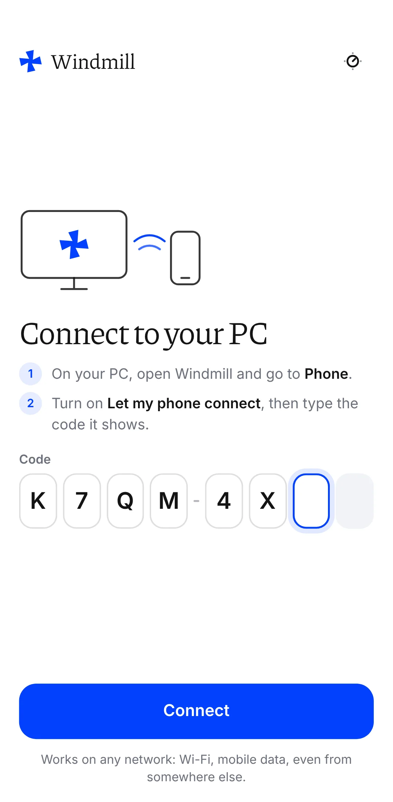
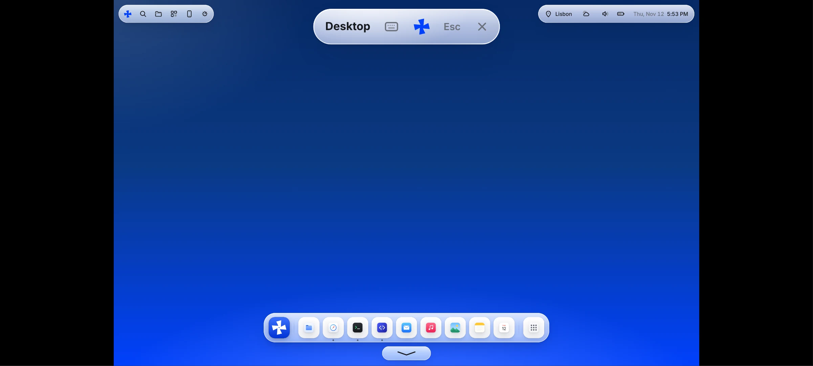
Off until you say so.It only listens after you turn on Let my phone connect.
From anywhere.Wi-Fi, Ethernet or mobile data. Any network, encrypted end to end.
One phone, one code.Make a new code whenever you like.
Windmill comes with OpenDyslexic and Atkinson Hyperlegible. Pick one in setup, and every word in Windmill changes. Try them on this page.
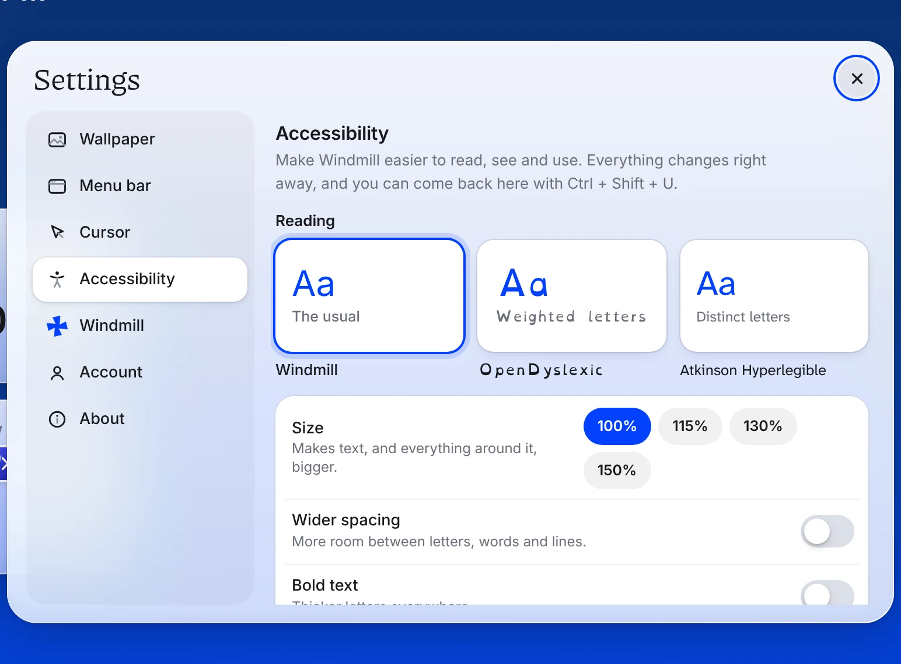
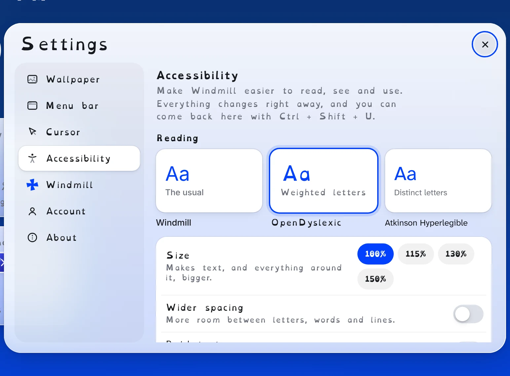
Bigger everythingWider spacingBold textA reading guideScreen tintsMore contrastSolid surfacesReduce motion
Six wallpapers, three of them slowly moving, or any photo or video of your own. Light or dark. And an app icon in blue, white or black that your taskbar and your phone follow.
The whole of Windmill, made for the evening.
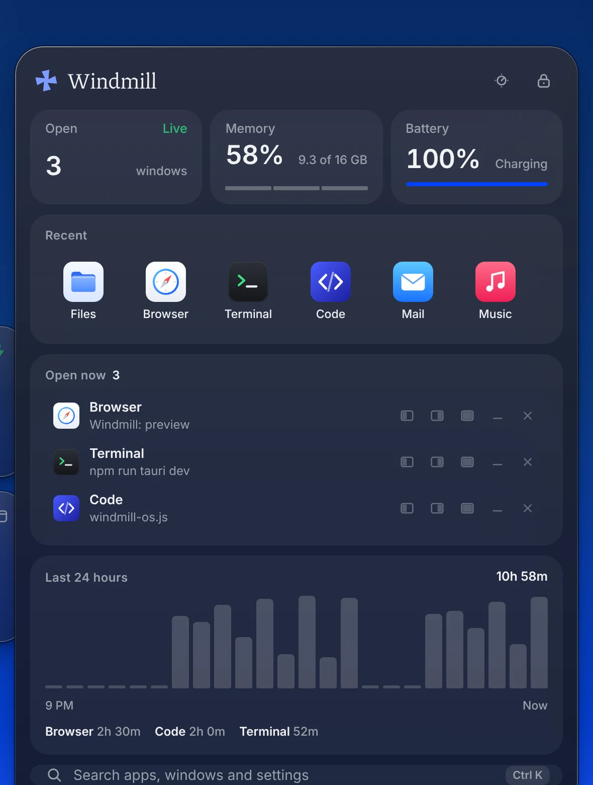
Pick it in Settings. Windows and your phone's home screen change with it.
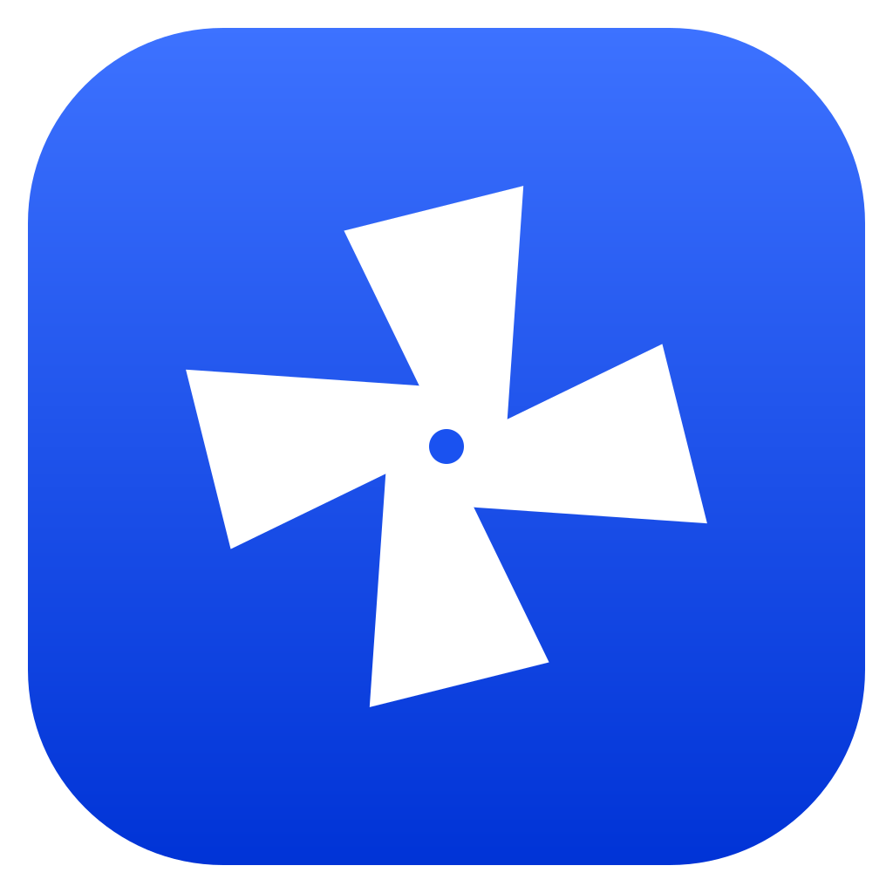
It's counted on your PC and saved there. It's never sent anywhere.
A public server only helps them find each other. Then they talk directly, encrypted.
Sign in with GitHub uses a one-time code. Sign out any time, and the token is gone.
Windmill sends the city from your time zone to Open-Meteo, and nothing else.
Free while it's a preview. No account needed.
For Windows 10 and 11. Installs just for you, no admin needed.
Download Windmill-Windows-Setup.exe · 1.9 MBThe installer isn't signed yet, so Windows may warn you. Choose More info, then Run anyway. Try Windmill in your browser or see every release.
No. Windmill is an app that runs full screen on Windows and gives your apps a calmer home. Windows is still underneath, doing what it always does.
No. Windmill shows the apps you already have, Store apps included, with their real icons. When you open one, it's the same app you've always used.
Press Ctrl and the Windows key to open the Windmill panel and choose Shut down. Windmill asks your apps to close so they can save, then quits, and the taskbar is back. You can also turn off Start with Windows in Settings.
It's a remote for your PC, from anywhere: Wi-Fi or mobile data, the same network or not. Type the code your PC shows, and you see your PC's screen and use it with touch and your phone's keyboard. No Android? Open thatmaxwell.github.io/Windmill/app/#remote in any phone's browser.
It only works after you turn it on in Windmill, only with the eight-character code shown on your PC, and only for one phone at a time. Your phone and PC talk over WebRTC, which is always encrypted. A public server helps them find each other, and when a network blocks a direct link, a relay passes along data it can't read.
Windows comes first. You can try the whole interface in your browser today.